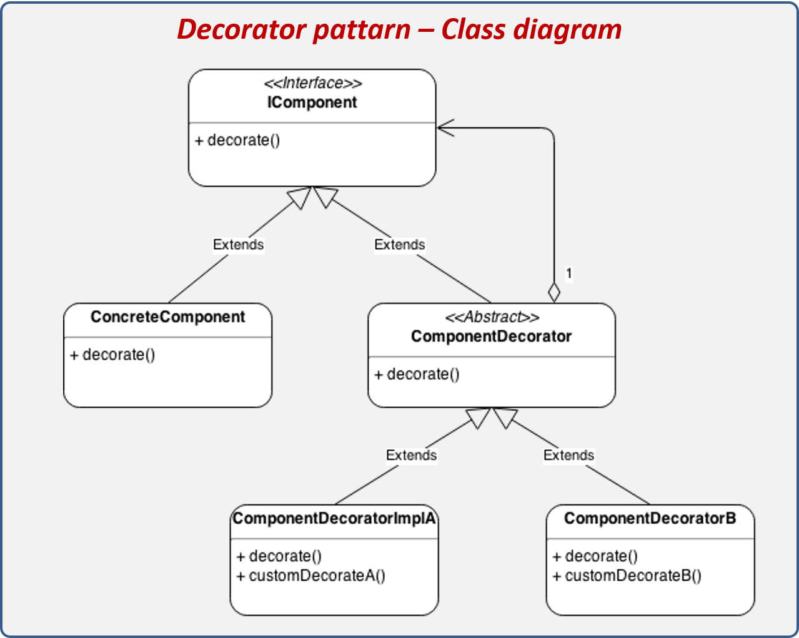

Estructurales - Decorador
Los patrones estructurales establecen las relaciones y organizaciones entre los diferentes componentes de nuestro software, resolviendo de una manera elegante diversos problemas que nos encontramos al implementar soluciones sin haber evaluado previamente todas las consecuencias y posibilidades. No hay que olvidar que el uso de patrones no es una cuestión unitaria, para solucionar un problema o eventualidad cuando surja, sino que nos plantean una serie de directrices que pueden solventar problemas futuros, hay que pensar a largo plazo y valorar siempre la expandibilidad del proyecto.
Se utiliza este patrón cuando necesitamos añadir de manera dinámica diferentes funcionalidades a un objeto. Permite además retirar la funcionalidad si se necesita. Evitamos con este patrón definir cada funcionalidad mediante una clase heredada, utilizando para ello clases que implementan las funcionalidades necesitadas y que se asocian con la clase que necesita dicha funcionalidad.
Estructura del patrón de diseño Decorador.
Tenemos una empresa de creación de páginas webs y, a partir del modelo básico, tenemos diferentes funcionalidades que podemos añadir. Para facilitarnos la tarea de crear presupuestos, nos hemos puesto manos a la obra y estamos creando una aplicación para calcularlos. Partimos en un principio de un presupuesto base, correspondiente a la página web básica, y queremos añadir la posibilidad de que esa página web pueda contener un carrito de la compra y un sistema de autentificación de usuarios. Si nos pusiésemos a implementar una subclase para cada tipo de página, tendríamos cuatro clases en total: Página, PáginaConCarrito, PáginaConLogin y PáginaConCarritoYLogin. Si quisiésemos añadir en un futuro un libro de visitas y/o un foro, acabaríamos teniendo ocho y dieciséis clases respectivamente, con lo que tendríamos al final una solución insostenible.
Para solventar ese problema, creamos una subclase abstracta PaginaDecorator de la que heredan las clases CarritoDecorator y LoginDecorator. De este modo, podemos implementar tantas funcionalidades como queramos creando nuevas clases de herencia para cada funcionalidad.
La clase PaginaDecorator emula y encapsula el comportamiento de Página y utiliza composición recursiva para añadir tantos decoradores concretos como se necesiten. Con este patrón, en vez de definir los objetos con la funcionalidad, definimos las funcionalidades y luego se las añadimos al objeto que queramos.

Decorador
class Program
{
static void Main(string[] args)
{
CarritoDecorator paginaConCarrito = new CarritoDecorator(new Pagina());
Console.WriteLine(paginaConCarrito.Calcular());
LoginDecorator paginaConCarritoYLogin = new LoginDecorator(paginaConCarrito);
Console.WriteLine(paginaConCarritoYLogin.Calcular());
LoginDecorator paginaConLogin = new LoginDecorator(new Pagina());
Console.WriteLine(paginaConLogin.Calcular());
//En el extraño supuesto de que se necesiten dos sistemas de autentificación
LoginDecorator paginaConDobleLogin = new LoginDecorator(paginaConLogin);
Console.WriteLine(paginaConDobleLogin.Calcular());
Console.Read();
}
En cada decorador incluiríamos la funcionalidad (que en este caso sería añadir a la página el precio por la funcionalidad), pero podría ser cualquier otra cosa
Pros y contras del patrón de diseño Decorador
Considerar el patrón de diseño Decorator al diseñar un programa es útil por varias razones. En primer lugar, utilizar la estructura Decorador conlleva un alto grado de flexibilidad: las funcionalidades de las clases pueden ampliarse durante la compilación y durante el tiempo de ejecución sin necesidad de recurrir a una jerarquía de clases basadas en la herencia. Esto mejora significativamente la legibilidad del código del programa.
Debido a que la funcionalidad se divide en varias clases decoradoras, el rendimiento del software puede incrementarse. Esto facilita la recuperación e iniciación de funciones específicas. Con una clase base compleja que proporciona permanentemente todas las funciones, esta opción de recursosoptimizados no está disponible.
Sin embargo, desarrollar usando el patrón Decorador tiene también algunas desventajas. Con la introducción del patrón aumenta la complejidad del software de forma automática. La interfaz Decorador, en particular, suele contener mucho texto y términos nuevos, lo que aumenta su complejidad. Otra desventaja es el gran número de objetos Decorador, razón por la cual se recomienda una sistematización separada para evitar problemas de visualización al trabajar con subclases. Por último, las largas cadenas de llamadas de los objetos decorados (es decir, los componentes ampliados) suelen dificultar la detección de errores y por ende también el proceso de depuración.